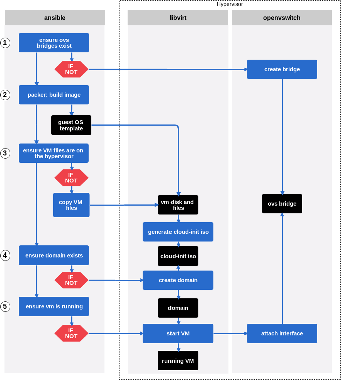

I you are, like me, concerned about privacy, you may be the administrator of a few physical servers, either at home or rented to some dedicated server providers. Virtual machine instances (or VPS) bought in public clouds are great, but if you can’t configure yourself the underlying network and the hypervisors, where is the fun ? (just kidding, there is so much to do above a cloud-like infrastructure too). Here I’ll describe a little configuration I made for my own needs. The purpose is to deploy automatically (via ansible) virtual machines, and the networks they rely on, on multiple debian 9 kvm hypervisors. The result is really basic compared to the feature you can get, either from a public cloud service or from a fully configured and integrated private cloud software suite (let’s say OpenStack). The idea here is not to provide a full featured infrastructure, but to build a lightweight IaaS infrastructure, piece by piece. Here we will focus on virtual machines deployment and basic networking, virtual machines disks will be stored on hypervisors local hard drives (yeah, not so good for live migration, but let’s keep some fun for later).
First, let’s present the building blocks of this workshop:
- Packer: description here, permits to build fresh virtual machine images from a json template
- Ansible: a well known configuration management tool (see Infrastructure As Code), we will use it to apply every needed configuration on the hypervisors.
- Cloud-init: a python software which, preinstalled on a virtual machine, is able to run some configuration tasks during the boot sequence. Cloud-init is able to read configuration it has to apply from multiple data sources like OpenStack or AWS APIs, if the virtual machine is in that context, or simply from a locally attached iso containing the right configuration files. It kinda became the de-facto standard for guests pre-configuration in cloud environments. It is also very handy to avoid dependencies to DHCP servers in your infrastructure (that’s the main usage here).
- OpenVSwitch: is swiss army knife virtual switch software. The use case in this article is very simple: interconnecting virtual machines, we could have used simple linux bridges for that. However, building the network basics of the IaaS on such a rich software will allow us to address much more use cases in the future (let’s say automatically mounting VXLAN and/or IPSec tunnels between our hypervisors, have network readability with sFlow…)
- libvirt: the virtualization API, here used above Qemu/KVM. We will present some libvirt xml configuration files in this article (jinja2 templates in fact, used via Ansible)
Now we know what our tools are for, we will describe the worflow of this tiny project.

Project workflow
Let’s describe each step a bit more precisely.
0. Requirements installation
First we have to install all required packages on the hypervisors, for qemu-kvm, libvirt, openvswitch, and some utils (vlans could be usefull to).
|
|
1. Openvswitch configuration
Now we have to configure ovs bridges in order to allow attaching new virtual network interfaces to thoses bridges. Creating persistent ovs ports is also interessting (it will be when we’ll deploys ipsec tunnels between hypervisors the next article). You surely noted the with_items parameter. That way, we will be able to call those playbooks with a dictionnary as parameter and run them with multiple datasets.
In the main playbook:
|
|
If we have a look at the bridges.yml playbook:
|
|
Yes, it’s really simple, according to the needs of this article. You could easily improve that task by using other parameters from the openvswith_bridge module.
In the ports.yml playbook:
|
|
Here we set ovs ports configuration directly in the network/interfaces.d directory (Debian environment). The ovs_interfaces.j2 template looks like this:
|
|
Here we define a layer 3 interface that will basically permit to ping our virtual machines and validate the POC (and, because I use isolated dedicated servers on the Internet, it will permit me to route traffic from and to virtual machines). I’ll address more interesting use cases in next posts. 2. Building guest OS image with packer
We will build guest OS images with Packer. You can check my last post to read about packer or see example configuration. What is new here is that we will use cloud-init, so we have to install it on the guest OS. We will do guest provisioning with ansible, because ansible is great. In the packer json template we need:
"provisioners": [
{
"type": "ansible",
"playbook_file": "./ansible/playbook.yml"
}
],
"post-processors": [
{
"type": "compress",
"output": "template-debian-9.qcow2.tar.gz"
}
](The post-processors is here to compress the image before we copy it on the hypervisor, yes we should checksum to).
The playbook should simply contain:
- apt:
name: cloud-init
state: present- Give libvirt access to the virtual machine disk file
This is self explanatory.
|
|
4. Cloud-init configuration and libvirt domain creation
Cloud-init is able to take its configuration from a locally mounted iso file. We need to create that iso file on the hypervisors, including meta-data and user-data configuration files.
|
|
Note the shell task: we build a fresh iso image containing our cloud-init data files. This iso will be mounted as a cd by libvirt, when the guest is booting.
Here are the templates:
meta-data.j2 is really basic:
local-hostname: {{ item.hostname }}in user-data.j2 we find the network configuration of the guest:
#cloud-config
write_files:
- content: |
# This file describes the network interfaces available on your system
# and how to activate them. For more information, see interfaces(5).
# The loopback network interface
auto lo
iface lo inet loopback
{% for interface in item.interfaces %}
{% if interface.comment is defined %}
# {{ interface.comment }}
{% endif %}
auto {{ interface.name }}
iface {{ interface.name }} inet {{ interface.mode }}
address {{ interface.address }}
netmask {{ interface.netmask }}
{% if interface.gateway is defined %}
gateway {{ interface.gateway }}
{% endif %}
{% if interface.dns is defined %}
dns-nameservers {{ interface.dns | default('9.9.9.9') }}
{% endif %}
{% endfor %}
path: /etc/network/interfaces5. Define domain and boot the guest
I won’t paste the whole libvirt domain template as this blog post is already too long. Here are the two specific parts, the domain xml required to mount the cloud-init configuration iso:
<disk type='file' device='cdrom'>
<driver name='qemu' type='raw'/>
<source file='/var/lib/libvirt/images/{{ item.name }}/{{ item.cloudinit_file | default('cloud-init') }}_ci.iso'/>
<target dev='hdc' bus='ide'/>
<readonly/>
<address type='drive' controller='0' bus='1' target='0' unit='0'/>
</disk>and the one required to create virtual network interfaces, for that virtual machine, attached to ovs bridges we created earlier:
{% if item.ovs is defined %}
{% for ovsbr in item.ovs %}
<interface type='bridge'>
<virtualport type='openvswitch'></virtualport>
<model type='virtio'/>
<target dev='veth-{{ item.name }}'/>
<source bridge='{{ ovsbr.name }}'/>
{% if ovsbr.vlans is defined %}
<vlan>
{% for vlan in ovsbr.vlans %}
<tag id='{{ vlan }}'/>
{% endfor %}
</vlan>
{% endif %}
</interface>
{% endfor %}
{% endif %}Note that this configuration takes into account vlan tags (with the block ), you can then attach an interface in access mode on a specific vlan and isolate trafic between virtual machines from different groups.
And then, the ansible tasks to deploy the new domain:
- name: defining VM domain
virt:
name: "{{ item.name }}"
command: define
xml: "{{ lookup('template', 'libvirt/domain.xml.j2') }}"
uri: "qemu:///system"
tags: define
- name: VM state
virt:
name: "{{ item.name }}"
state: running
uri: "qemu:///system"
tags: startFeed the variables: host_vars and group_vars
If you reached those lines, first thank you (that post is a bit long, I’m a new comer in terms of blogging). Second, you may want to see a vars file sample, to make all those configurations alive. Here it is:
ovs:
bridges:
- name: ovs-wan1
state: present
ports:
- bridge: ovs-wan1
port: itc-wan1
tag: 25
mode: static
address: 192.168.192.129
netmask: 255.255.255.248
vms:
- name: test
hostname: test
disk_name: template-debian-9
memory: 512024
archive_name: template-debian-9.qcow2
ovs:
- name: ovs-wan1
vlans:
- 25
interfaces:
- name: eth0
mode: static
address: 192.168.192.130
netmask: 255.255.255.248
gateway: 192.168.192.129The first block sets variables for the OpenVSwitch part. Note that we tag the itc-wan1 interface as the vlan 25. We do the same on the interface defined by libvirt in order to be able to test the virtual machine connectivity, in the vlan 25, on the ovs-wan1 bridge. Is it working ?
If I check connectivity from the hypervisor, to the virtual machine (remember, dummy setup, but good to test quickly, I could have booted two virtual machines to :) ):
ping 192.168.192.130
PING 192.168.192.130 (192.168.192.130) 56(84) bytes of data.
64 bytes from 192.168.192.130: icmp_seq=1 ttl=64 time=0.308 ms
64 bytes from 192.168.192.130: icmp_seq=2 ttl=64 time=0.153 msTADAA !
Flaws
There are many flaws in this setup:
- Using the ansible virt module to define the domain, we can’t edit the domain later. Redefining the domain won’t work as the module doesn’t act if the domain is already defined. With this setup it is necessary either to edit the domain by hand, or improve this setup calling virsh directly from shell commands, getting each operations result and interpret them to keep the idempotency. The best way is probably to make a better setup based on virsh attach/detach-interface, attach/detach-device and so on… I’ll improve that part in a next post.
- Here I presented the basic setup which permits to deploy new bridges, interfaces and virtual machines, but the deletion is not handled properly, this is for the next step. The jinja2 templates could be improved to. I don’t use libvirt networks to configure ovs bridges, it would be proper to do so. As I said in the introduction, this setup lacks a lot of features to be nice, I’ll improve it step by step ;)
Feel free to comment !